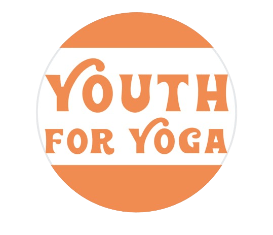

We are writing as student volunteers and founders of Youth for Yoga, and we are deeply grateful to have been part of the Yoga Without Borders program.
Traveling from California to Firozabad, India to teach at Dau Dayal Girls School was one of the most meaningful experiences of our lives. At first, we were unsure how we would connect across language and cultural differences but we quickly realized that yoga creates connection beyond words.
Through activities like Partner Yoga, Rainbow Yoga wave, Sun Dance and Mandala Yoga, we saw students transform within minutes, from hesitant to joyful and from quiet to confident. Some who were initially unsure stepped forward to lead poses in front of dozens of their peers, which was incredibly powerful to witness. We also saw how much students valued being seen, working together, and learning in a fun, safe environment. Even simple breathing exercises helped them slow down, focus, and feel more present.
This experience showed us that yoga can build confidence, reduce stress, and create connection without requiring expensive resources. That is why we strongly believe in Yoga Without Borders. This program has the potential to reach many more students around the world, especially in communities with limited access to wellness education.
As students ourselves, we understand how important mental health and confidence are. This program delivers both in a way that is inclusive, engaging, and impactful. We sincerely hope it continues to grow and reach more schools globally. We are proud to support this mission.
Rushil Chopra
Co-Founder, Youth for Yoga
Yoga Without Borders Youth Ambassador
Kashni Chopra
Co-Founder, Youth for Yoga
Yoga Without Borders Youth Ambassador